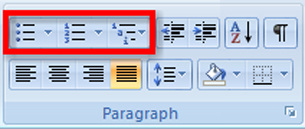
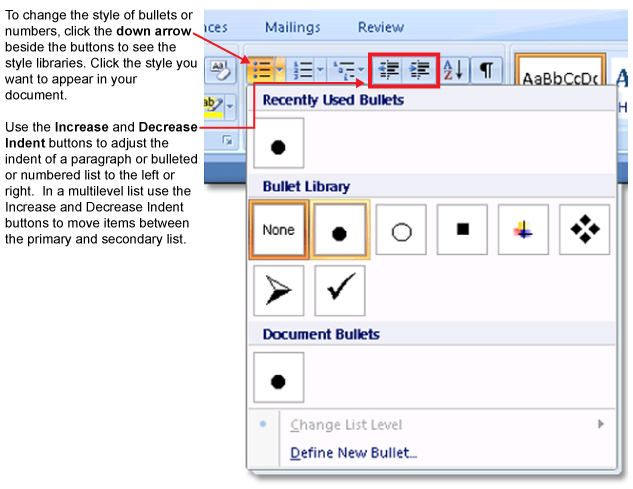
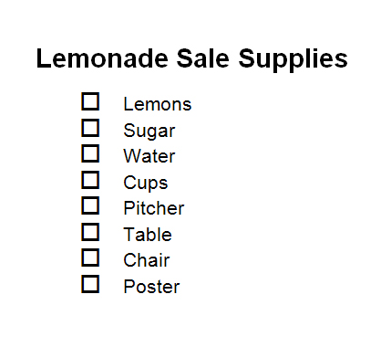

Microsoft product screen shot(s) reprinted with permission from Microsoft Corporation.
Bullets and numbers help you organize your thoughts and make information easier for your readers to follow. Using the Bullets, Numbering, and Multilevel List buttons found on the Home tab of your Microsoft Word 2007 ribbon, you can easily create bulleted, numbered, and multilevel lists. There are a few ways you can add bullets and numbers to your document:
You can change the bullets or numbers by clicking the down arrow beside each button to access a library of different bullet symbols or number formats. Options include changing your list to a checklist that you can then put into action.

Microsoft product screen shot(s) reprinted with permission from Microsoft Corporation.
Go to the Instructional Videos and watch “The Multilevel List Feature” and “The Bulleted and Numbered List Feature” to learn or review how to create bulleted and numbered lists.
Go to the Instructional Videos and watch “Bullets” to see how to quickly change bullet characters into different symbols to create a printable checklist to keep yourself organized.

Microsoft product screen shot(s) reprinted with permission from Microsoft Corporation.
Want to make more quick changes to the look of the text in your document? Use the Font dialog box in the Home tab to bring up the Font menu. Here you can change the font, size, style, and colour of your text, and even add effects. When you click on Character Spacing, you can adjust the spacing of characters to expand and condense, or use Scale to stretch or compress characters. Go to the Instructional Videos and watch “Scale/Spacing” to see how to access and modify the font and character settings.